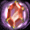
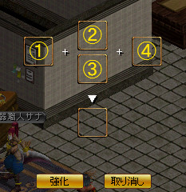

インフィニティ武器について
購入方法
古都噴水から右上、ブルンギルド連合会の入口付近（９８，５４）にいる武器職人サナから
神秘の石４個（神秘のかけら４００個分）で購入可。
神秘のかけらを神秘の石に換えるには、
ギルドホール内の考古学者グランに話しかけて、１→２で。
基本性質
・１～１０までの１０段階。購入時は１。・武器職人サナに材料と費用を払って強化を依頼する。成功すると１つLvUP。失敗するとLvが下がる。
・取引可
・異次元、エンチャ不可
強化方法
強化は武器職人サナに材料と費用を払い、依頼する。必要な材料、費用は以下の通り。
◆費用や材料、強化の成功確率が改善した（１８／１２／１９）
１８／１２／１９アップデートにより、
・強化に必要な費用と材料の軽減
・強化の成功確率の改善
が行われた。
特に、
１→２は無条件に成功（「強化」ボタンを押した瞬間に成功し、２になる）するようになった。
| 等級 | GOLD | 神秘の石 | 出土品 | 結晶石 | 失敗時の等級 （ガードなし） |
失敗時の等級 （ガードあり） |
備考 |
|---|---|---|---|---|---|---|---|
| １→２ | １０万G | |
|
－ | － | 無条件で成功する | |
| ２→３ | ３０万G | |
１ | ２ | |||
| ３→４ | ５０万G | |
２ | ３ | |||
| ４→５ | １００万G | ３ | ４ | ||||
| ５→６ | １００万G | ４ | ５ | ||||
| ６→７ | ２００万G | ５ | ６ | ||||
| ７→８ | ３００万G | 1 | ６ | ||||
| ８→９ | ４００万G |  | １ | ７ | |||
| ９→１０ | ５００万G | １ | ８ |
強化を依頼すると、以下の画面が出る。
|  | ①インフィニティ武器を登録するスロット ここに武器をドラッグ＆ドロップする。 ②インフィニティガードをセットするスロット ③インフィニティアップをセットするスロット インフィニティアップを使う場合はここにドラッグ＆ドロップする。 インフィニティアップは武器職人サナから定価10Mで購入可。 ④コスミックストーンを持っている場合は自動的にここにセットされる。 |
①に強化したいインフィニティ武器を置く。
必要な場合は
②にインフィニティガード
③にインフィニティアップ（またはインフィニティアップＤＸ、またはインフィニティアップＤＸＵＬＴ）
をセット。
「強化」ボタンを押して改良にチャレンジする。